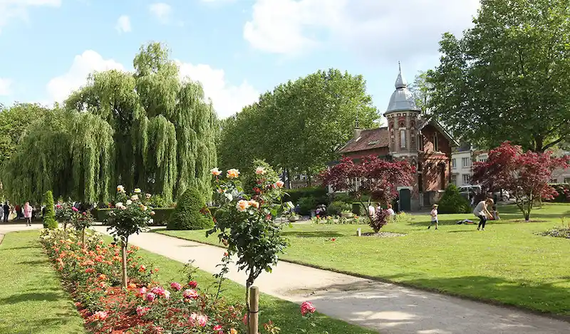

Gestion du patrimoine arboré de la ville de Saint-Quentin
Ce projet vise à fournir une solution intégrée et efficace pour la gestion et la préservation des arbres urbains. Ce projet a pour objectif principal d'aider les services municipaux à inventorier, surveiller et entretenir le patrimoine arboré de la ville. En s'appuyant sur une base de données centralisée et des outils de visualisation géographique, le projet permet de recenser chaque arbre avec des détails tels que l'espèce, la hauteur, le diamètre du tronc, et l'état de santé. De plus, il inclut des fonctionnalités avancées de prédiction pour estimer l'âge des arbres et évaluer les risques de déracinement, grâce à des algorithmes d'apprentissage automatique. En facilitant l'ajout de nouvelles données et en offrant une visualisation claire et intuitive, ce projet contribue non seulement à une meilleure gestion des arbres existants mais aussi à la planification des actions de maintenance préventive, assurant ainsi la durabilité et la sécurité des espaces verts urbains. En somme, ce projet représente une avancée significative vers une gestion plus écologique et durable des ressources naturelles de la ville.
